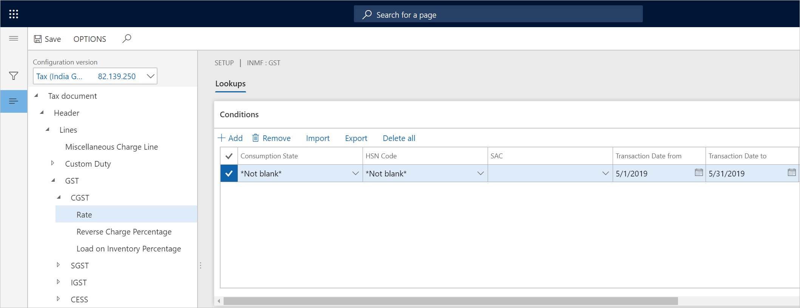
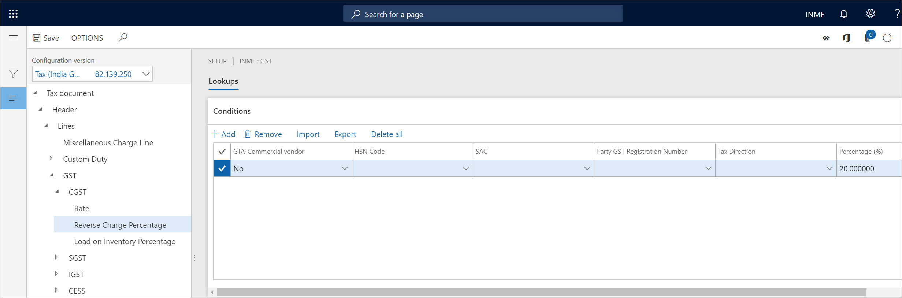
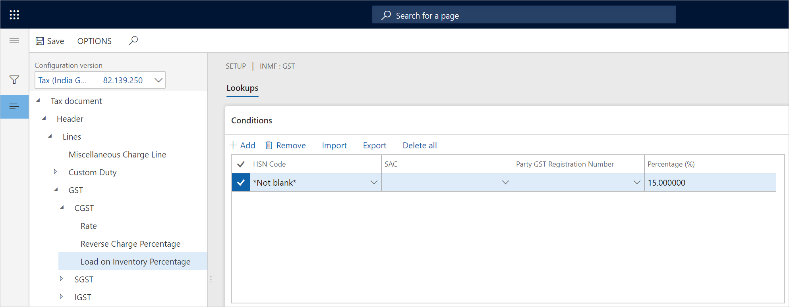
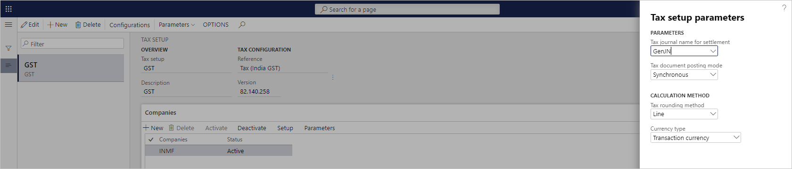

Set up rate and percentage tables
Expand the Tax component node, and select the Rate node.
In the Value field, enter the tax rate. The remaining fields are used to determine the rate. In the standard GST configuration, there are several pre-defined fields, including Consumption state, HSN code, and SAC. You can select the fields relevant to your business to determine the rate.

If you leave any input fields empty, then the fields can accept any input values. For example, in the following table, if HSN is 998313 and not matter what the value of Party GST Registration Number is, then the rate is 12%.
HSN Party GST Registration Number Value 998313 12% Note
You can use the Tax rate type instead of the HSN and SAC to determine the tax rate. You can also import the standard GST configurations, which supports tax rate type, or you can extend the earlier configuration by adding tax rate type into the lookup. The tax rate type is supported as of Dynamics 365 Finance version 10.0.5 (October 2019).
Select the Reverse Charge Percentage node, and in the Value field, enter the reverse charge percentage.

Select the Load on Inventory Percentage node, and in the Value field, enter the load on inventory percentage.

Select Save, and then select Close.
On the Companies FastTab, select Parameters.
Enter the parameter values, and then select OK.

Import/export tax setup
Prepare the tax setup in Microsoft Excel, and then import the data into the tax setup.
- In the rate table, select Export.
- Open the exported CSV file in Excel, prepare the tax setup, and save the file.
- In the rate table, select Import, choose the file, and then load the data into the setup.
Validate tax setup
Incorrect tax setup can cause problems that are hard to detect. Common mistakes in tax setup include duplicate tax setup records or entering non-exist master data.
Duplicate tax setup records
Duplicate tax setup refers to records with the same values in input fields. Following is an example of two records with the same values for HSN and Party GST Registration Number, however, they result with two different values.
| HSN | Party GST Registration Number | Value |
|---|---|---|
| 998313 | 12% | |
| 998313 | 15% |
To resolve and prevent this issue, enable Tax setup validation in Feature Management. With this feature enabled, the system will check for duplicates when you enter new data through the UI or when you import the tax setup from a CSV file.
To check for existing dupclicates, select Show Duplicates, and then delete the unwanted records.
Enter non-exist master data
When Tax setup validation is enabled, the system will verify entered and imported master data including HSN and SAC.